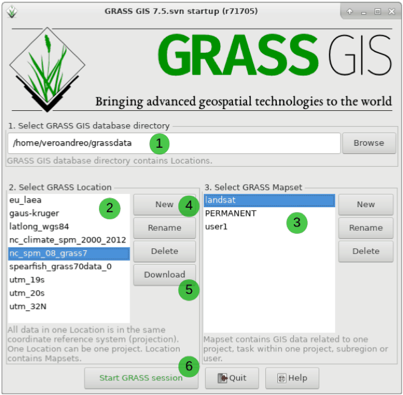

Core Concepts
Understanding the core structure and philosophy of GRASS GIS is essential before diving into spatial analysis. GRASS GIS organizes data and operations in a unique hierarchical structure and uses powerful tools for geospatial processing.
The main component of the Data tab is the Data Catalog which shows the GRASS GIS hierarchical structure consisting of database, project and mapset .
-
GRASS database (root project directory):
- GISDBASE is the directory where all GRASS GIS data is stored.
- It acts as a container that holds LOCATIONS.
- You can think of GISDBASE as the "root folder" where all GRASS-related data for a project is organized.
-
Location (defines projection and extent):
- A LOCATION is a folder within GISDBASE that defines a specific coordinate system, projection, and geographic extent.
- Each LOCATION is tied to a specific Coordinate Reference System (CRS), so all maps and data within a location must use the same CRS.
-
Mapset (stores individual data and settings):
- A MAPSET is a subdirectory inside a LOCATION where data is stored. It helps manage different workflows or user data independently, even within the same LOCATION.
- The PERMANENT mapset inside each LOCATION contains base information such as region settings (the extent and resolution) and the coordinate system. Other mapsets can be created for individual users or tasks within the same location.
📘 Read the GRASS Quickstart Guide to understand this setup better.
GRASS GIS Startup Screen
When you open GRASS for the first time, a new directory is created in your home folder. This directory is called grassdata by default and stores all your GRASS projects. GRASS projects are simply folders storing your geospatial data with common coordinate reference system (CRS), ensuring consistency of your data. At the project level, data is further organized into subprojects called mapsets, which you can use to manage different subregions or analyses within a project. Each project contains a special mapset called PERMANENT, which is used to store source datasets for your analysis that can be easily accessed from other mapsets.

GRASS GIS Database Structure

| Component | Description |
|---|---|
GISDBASE |
Root folder where all GRASS GIS data is stored. |
LOCATION |
Folder inside GISDBASE that defines a projection/CRS. All data in a LOCATION shares the same CRS. |
MAPSET |
Subdirectory of a LOCATION for storing actual data and managing workflows. |
PERMANENT |
Special mapset holding region settings and the default CRS. |
WIND |
File in each MAPSET that holds region resolution/extent. |
GRASS Region: Computational Window
Each analysis in GRASS operates within a defined computational region:
- It specifies the geographic extent, resolution, and alignment.
- You can view or set the region using the g.region command.
📌 All raster calculations are restricted to the computational region.
Raster and Vector Data Models
GRASS supports both raster and vector formats:
- Raster data represent continuous surfaces like elevation or precipitation using a grid of cells.
- Vector data store discrete features such as roads, boundaries, or points of interest using geometries (point, line, polygon).
Common import commands:
r.in.gdal– Import raster datav.in.ogr– Import vector data
Command Structure and Modules
GRASS is modular: each task is handled by a command-line module.
Standard Syntax:
module_name input=... output=... [other parameters]
Module Prefixes:
r.– Raster modules (e.g.,r.mapcalc,r.slope.aspect)v.– Vector modules (e.g.,v.buffer,v.overlay)g.– General tools (e.g.,g.region,g.list)i.– Imagery and remote sensingdb.– Database operationst.– Temporal framework
Example:
r.slope.aspect elevation=dem slope=slope_map aspect=aspect_map
GUI and CLI
- GUI (Graphical User Interface): Beginner-friendly interface to access tools visually.
- CLI (Command Line Interface): Powerful, scriptable, and preferred for advanced workflows.
Both interfaces work seamlessly and reflect the same underlying operations.
Attribute Tables and Databases
Each vector map can be linked to an attribute table (usually SQLite by default). GRASS provides SQL-like functionality with db.select, db.connect, etc., to manage these databases.
Scripting and Automation
- GRASS supports Python scripting using the
grass.scriptandgrass.pygrassmodules. - Batch processing is possible with Bash, Makefiles, or Python Notebooks.
- This enables building automated, reproducible workflows.
Logging and Metadata
Every GRASS module logs processing history in the metadata:
- View history using r.info or v.info
- Helps maintain data provenance and reproducibility
By understanding these concepts, you are now ready to begin working with raster and vector data in GRASS GIS.